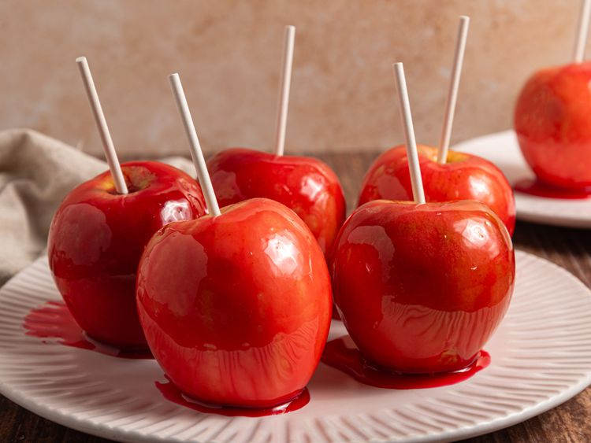

Candy Apples

Description
These candy apples have a hard crunchy coating. Kids love them at
Halloween!
Ingredients
- cooking spray
- 15 craft sticks
- 15 medium apples, washed and dried
- 2 cups white sugar
- 1 ½ cups water
- 1 cup light corn syrup
- 8 drops red food coloring
Directions
- Gather all ingredients.
-
Lightly grease cookie sheets. Insert craft sticks into whole, stemmed
apples.
-
Combine sugar, water, and corn syrup in a medium saucepan over
medium-high heat. Bring to a boil and insert candy thermometer; continue
to boil, without stirring, until temperature reaches 300 to 310 degrees
F (149 to 154 degrees C) or until a small amount of syrup dropped into
cold water forms hard, brittle threads.
- Remove from heat and stir in food coloring.
-
Holding each apple by its stick, dip in syrup, remove and turn to coat
evenly. Place on prepared sheets to harden.
Home